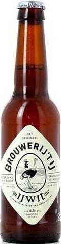

Germany
-
Schneider Weisse Tap 6 Exclusive
A legendary German beer brewed with wheat and dark malts. It’s full-bodied, subtly sweet, smooth and creamy, and peppered with spiciness from the yeast and hops. High in alcohol and big on flavour, every sip is a beery pleasure. -
Fruh Kolsch Exclusive
Cologne’s beer style, Kölsch, is a pale ale bordering on lager territory and Früh’s version is as refreshing as it comes. Clean and light with a bready sweetness, some lemon fruitiness and a dry, hoppy finish. It’s so drinkable that the bottle rarely seems big enough.
Belgium
-
Brouwerij Bosteels DeuS Exclusive
One of the more intriguing wine-beer hybrids is bière de champagne, or bière brut. As with champagne, the process incorporates lengthy multiple fermentations and disgorging yeast from the bottle’s neck. A leading example is DeuS (pronounced DAY-ews), which is fermented in Belgium but is fittingly finished in France’s Champagne region. The result is a Sahara-dry sparkler with a spoonful of citrus and funk. -
Orval Trappist Ale Exclusive
The beer was first brewed in 1931 and owes its unparalleled taste to the quality of the water, the hops and the yeast used. The brewery has selected very aromatic and unique hop varieties, which hark back to the first brewmaster of Orval, who hailed from Bavaria. The beer’s aromas are very pronounced while maintaining the right level of bitterness thanks to the English method of dry hopping.
The Netherlands
-
Jopen Koyt Exclusive
Jopen Koyt is brewed with gruit, a medieval blend of herbs in which sweet gale picked according to ritual was essential. Legend has it that, to avoid its hallucinogenic properties, sweet gale could only be picked at full moon by nude witches. -

Brouwerij 't IJ Struis Exclusive
A barley wine brewed in the English style. Struis is a full-bodied beer with a deep, dark colour and a soft, long-lasting head. The aroma is dark and sweet, with clear tones of chocolate and dried fruit. The aftertaste is dry and long-lasting, and leaves you yearning for more. A delicious accompaniment to food and ideal with skeapsrond cheese. Struis is only available as a bottled beer.